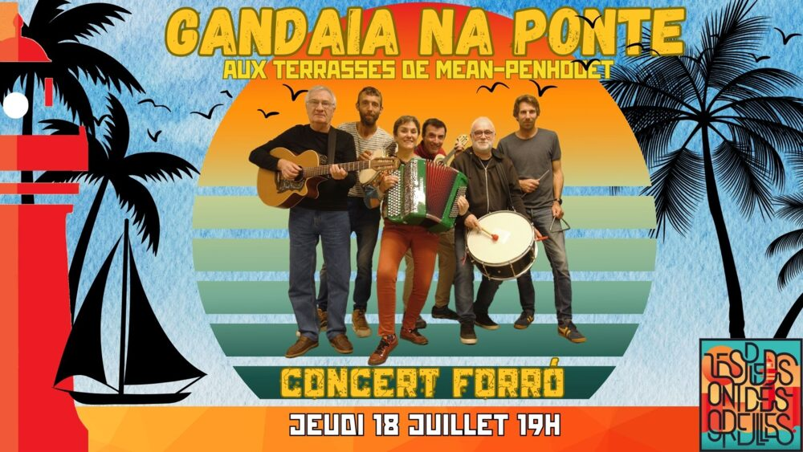

Gandaia na Ponte aux Terrasses de Méan-Penhoët

Lieu : MQMP, Méan-Penhoët, Saint-Nazaire
Jeudi 18 juillet, notre dernier événement forró avant la pause estivale. Invités par la maison de quartier de Méan-Penhoët aux Terrasses de Méan pour un concert/bal forró avec Gandaia na Ponte et Léo Corrêa.
À partir de 19h30, bal-concert à 20h. L'initiation à la danse a lieu tout le long du bal. Gratuit.
Aussi au programme
- 18 juillet 2024 : Gandaia na Ponte à la Flânerie du Brivet (Méan-Penhoët, Saint-Nazaire)